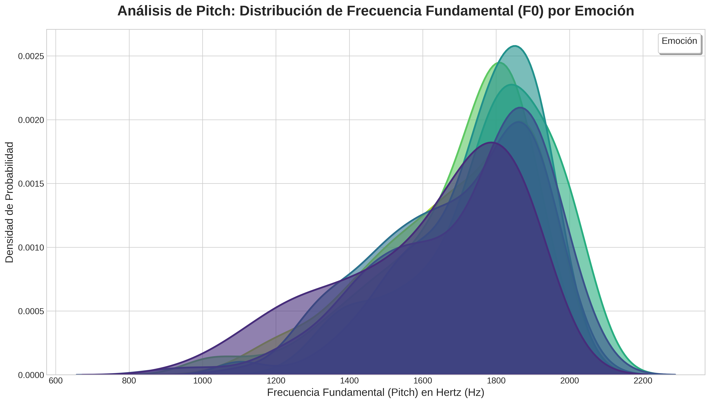

Análisis de Emociones en la Voz con Inteligencia Artificial
Explorando Patrones Acústicos para la Clasificación del Habla Afectiva
Un enfoque técnico para la modelación de características prosódicas y espectrales.
Equipo de Desarrollo
Alejandro Pérez
Yusmany Rejopachi
Jair Gutiérrez
1. Justificación Técnica
¿Por qué Audio para Reconocimiento Emocional?
La voz humana contiene una firma acústica compleja, rica en información latente sobre el estado afectivo del hablante.
Características Prosódicas
El pitch, la intensidad y el ritmo del habla son indicadores clave del estado emocional.
Patrones Espectrales
La distribución de energía en las frecuencias (formantes) varía sistemáticamente con la emoción.
Señal No Estructurada
El habla es una fuente de datos compleja, ideal para ser modelada con técnicas de IA.
¿Por qué Inteligencia Artificial?
- Extracción de Patrones: Capacidad para identificar automáticamente características complejas en espectrogramas, indetectables para el análisis tradicional.
- Análisis Objetivo: Los modelos de IA ofrecen una cuantificación consistente y reproducible de las características vocales.
- Modelado de Alta Dimensión: Habilidad para procesar miles de características extraídas de una sola señal de audio.
2. Descripción del Problema
Problema Técnico Principal
El desafío de clasificar estados emocionales a partir de la señal del habla, que es inherentemente variable, ruidosa y de alta dimensionalidad.
¿Qué reto técnico abordamos?
- Desarrollar un modelo capaz de analizar las sutiles variaciones en grabaciones de voz.
- Identificar y diferenciar patrones acústicos para 7 emociones distintas: alegría, tristeza, enojo, miedo, sorpresa, disgusto y neutralidad.
- Manejar la variabilidad entre diferentes hablantes, idiomas y calidades de grabación.
- Construir un pipeline de datos robusto, desde el preprocesamiento de la señal hasta la clasificación.
3. Objetivo General
Desarrollar y evaluar un modelo de inteligencia artificial para la clasificación de emociones humanas a partir del análisis de características acústicas y espectrales del habla, estableciendo un pipeline completo desde el preprocesamiento de la señal hasta la predicción del modelo.
4. Objetivos Específicos
5. Metodología Iterativa
Adoptamos un enfoque de desarrollo cíclico, que nos permite refinar y mejorar continuamente nuestro modelo basándonos en los resultados obtenidos.
1. Adquisición de Datos
2. Análisis y Preprocesamiento
3. Extracción de Características
4. Entrenamiento del Modelo
5. Evaluación y Resultados
6. Adquisición de Conjuntos de Datos
Conjunto 1: Base de Datos de Habla Emocional Mexicana (MESD)
- Cantidad: 864 grabaciones de audio
- Características: Español mexicano, 6 emociones + neutralidad
- Utilidad: Adaptación específica al habla mexicana
Conjunto 2: Audio de Habla Emocional RAVDESS
- Cantidad: 1,440 grabaciones vocales
- Características: Calidad profesional, 24 actores
- Utilidad: Benchmarks robustos de rendimiento
Conjunto 3: Toronto Emotional Speech Set (TESS)
- Cantidad: 2,800 muestras de audio
- Características: Alta calidad, actrices entrenadas
- Utilidad: Datos consistentes y controlados para el modelo base
7. Análisis Exploratorio de Datos (EDA)
Preguntas principales de investigación:
- ¿Existen diferencias espectrales consistentes entre estados emocionales?
- ¿Cómo varían las características prosódicas entre emociones?
- ¿Qué nivel de variabilidad existe dentro de cada categoría?
Visualizaciones Seleccionadas:
8. Visualización: Distribución del Pitch
Análisis de Pitch: Distribución de Frecuencia Fundamental (F0) por Emoción
Esta gráfica nos muestra cómo se distribuye el tono de voz (Pitch) para cada emoción. El eje X representa la frecuencia en Hertz, donde valores más altos significan un tono más agudo. El eje Y indica la densidad de probabilidad, es decir, qué tan comunes son ciertos tonos para una emoción.
9. Visualización y Análisis de MFCCs
Análisis Espectral: Distribución de los Primeros 13 MFCCs por Emoción

Esta visualización nos permite comparar la "forma" del sonido para cada emoción a través de los Coeficientes Cepstrales en la Frecuencia Mel (MFCCs). Cada "violín" muestra el rango y la concentración de valores para un coeficiente (eje X) y una emoción (color).
| Coeficiente(s) | Interpretación General |
|---|---|
| MFCC 0 | Energía total o sonoridad de la señal. |
| MFCC 1-4 | Capturan la forma general y la pendiente del espectro (contornos principales). |
| MFCC 5-13+ | Describen los detalles más finos y las "texturas" del espectro. |
El Viaje del Audio: De la Onda al Vector
Antes de que la IA pueda analizar una emoción, debemos traducir la onda de sonido a un lenguaje que entienda: los números. Este proceso se llama Extracción de Características. A continuación, veremos el paso a paso de cómo convertimos un archivo de audio en un único vector de 180 características.
Paso 1: Digitalización y Ventaneo
1.1 Digitalización
Una onda de sonido es una señal analógica continua. Para que una computadora la procese, debemos muestrearla. Esto significa tomar "fotos" o mediciones de su amplitud a intervalos de tiempo regulares.
- Frecuencia de Muestreo (sr): 22,050 Hz. Tomamos 22,050 mediciones por segundo.
- Resultado (`x[n]`): Obtenemos un largo arreglo de números, donde cada número es la amplitud del sonido en un instante.
1.2 Ventaneo (Framing)
El habla no es estática. Para analizarla, la dividimos en pequeños segmentos superpuestos llamados ventanas o frames, donde asumimos que el sonido es estable.
- Tamaño de Ventana: ~25 milisegundos.
- Resultado: En lugar de un arreglo largo, ahora tenemos una colección de muchos arreglos pequeños (las ventanas).

La onda de sonido se divide en múltiples ventanas (frames) para su análisis.
Paso 2: La Transformada de Fourier (FFT)
¿Qué es y para qué sirve?
Para cada una de esas ventanas, necesitamos saber qué frecuencias la componen. La Transformada Rápida de Fourier (FFT) es la herramienta matemática que lo hace posible.
La FFT descompone la señal del dominio del tiempo (amplitud vs. tiempo) al dominio de la frecuencia (energía vs. frecuencia). Es como pasar de ver la onda completa a ver un ecualizador que nos muestra qué tan fuertes son los graves, los medios y los agudos en ese instante.
$$X_k = \sum_{n=0}^{N-1} x_n \cdot e^{-i \frac{2\pi}{N} kn}$$
- $X_k$: El espectro resultante (un número complejo que contiene amplitud y fase para la frecuencia $k$).
- $x_n$: El valor de la muestra $n$ en la ventana de audio.
- $N$: El número total de muestras en la ventana.
- $k$: El índice de la frecuencia que se está calculando (desde 0 hasta $N-1$).

La FFT convierte una ventana de audio en su espectro de frecuencias.
Paso 3: MFCCs - El "ADN" de la Voz
Más allá del Espectro
El espectro de la FFT es útil, pero no es eficiente. Los Coeficientes Cepstrales en la Frecuencia Mel (MFCCs) son una forma mucho más inteligente de resumir la información del espectro, imitando cómo funciona el oído humano.
- Escala Mel: Primero, se aplica un banco de filtros al espectro para agrupar las frecuencias de una manera logarítmica, similar a nuestra percepción auditiva.
- Logaritmo: Se toma el logaritmo de las energías, de nuevo, para imitar cómo percibimos la sonoridad.
- DCT: Finalmente, se aplica la Transformada de Coseno Discreta (DCT), una operación que comprime toda esa información espectral en unos pocos coeficientes.
El resultado son los MFCCs: una descripción numérica muy compacta y robusta del timbre de la voz en esa ventana.

Flujo simplificado para obtener los MFCCs a partir del espectro.
Paso 4: El Vector Final de Características
Del Análisis por Ventana al Resumen Global
El proceso anterior nos da una matriz $M$ de características, donde cada fila $t$ corresponde a una ventana de tiempo y cada columna $j$ a una de las 180 características.
Para obtener un único vector $V$ que represente todo el audio, calculamos la media de cada característica a lo largo de todas las ventanas de tiempo $T$.
$$V_j = \frac{1}{T} \sum_{t=1}^{T} M_{t,j}$$
- $V_j$: Es el valor final de la característica $j$ en nuestro vector.
- $T$: Es el número total de ventanas (frames) en el audio.
- $M_{t,j}$: Es el valor de la característica $j$ en la ventana de tiempo $t$.
Este proceso condensa la información temporal en una sola "ficha técnica" que describe las propiedades acústicas promedio de todo el clip.

11. Preprocesamiento para Reducción Dimensional
¿Qué fue necesario para poder usar PCA y LDA correctamente?
Estandarización de Características (Scaling)
Técnicas como PCA y LDA son muy sensibles a la escala de las variables de entrada. Sin un escalado previo, las características con rangos de valores más grandes (como el pitch) dominarían a las de rangos más pequeños (como los MFCCs), sesgando el análisis.
La estandarización asegura que todas las características contribuyan de manera equitativa al análisis, resultando en un modelo más justo y preciso.
12. ¿Cómo Funciona StandardScaler?
1. Cálculo de la Media
Primero, calcula la media (promedio) de cada una de las características (columnas) en el conjunto de datos de entrenamiento.
μ = (Σx) / n
2. Cálculo de la Desviación Estándar
Luego, calcula la desviación estándar, que mide cuánta variación o dispersión existe respecto a la media.
σ = √[Σ(x-μ)² / n]
3. Transformación (Z-score)
Finalmente, para cada valor, resta la media y lo divide por la desviación estándar. Esto centra los datos en 0 y les da una varianza de 1.
z = (x - μ) / σ
13. Implementación del Modelo CNN 1D
1. Preparación de Datos (Código Real del Proyecto)
from sklearn.model_selection import train_test_split
from sklearn.preprocessing import StandardScaler, OneHotEncoder
# Dividir datos en entrenamiento (80%) y prueba (20%)
X_train, X_test, y_train, y_test = train_test_split(
X, y_encoded, test_size=0.2, random_state=42, stratify=y
)
# Estandarizar las características
scaler = StandardScaler()
X_train_scaled = scaler.fit_transform(X_train)
X_test_scaled = scaler.transform(X_test)
# Añadir una dimensión para la CNN 1D
X_train_cnn = np.expand_dims(X_train_scaled, axis=2)
X_test_cnn = np.expand_dims(X_test_scaled, axis=2)Dividimos los datos, asegurando que cada emoción esté representada por igual en ambos conjuntos (`stratify=y`). Luego, escalamos los datos y añadimos una dimensión extra, que es el formato que espera la capa `Conv1D` de Keras.
2. Definición y Entrenamiento del Modelo
from tensorflow.keras.models import Sequential
from tensorflow.keras.layers import Conv1D, MaxPooling1D, Dropout, Flatten, Dense
model = Sequential([
Conv1D(256, 5, padding='same', activation='relu', input_shape=(X_train_cnn.shape[1], 1)),
MaxPooling1D(pool_size=5),
Dropout(0.2),
Conv1D(128, 5, padding='same', activation='relu'),
MaxPooling1D(pool_size=5),
Dropout(0.2),
Flatten(),
Dense(y_encoded.shape[1], activation='softmax')
])
model.compile(optimizer='adam', loss='categorical_crossentropy', metrics=['accuracy'])
history = model.fit(
X_train_cnn, y_train, epochs=100, batch_size=64, validation_split=0.2
)Definimos la arquitectura de la CNN 1D, la compilamos con el optimizador 'adam' y la función de pérdida para clasificación multiclase. Finalmente, la entrenamos con los datos de entrenamiento, usando un 20% de estos para validación interna en cada época.
14. Reducción de Dimensionalidad: PCA vs. LDA
Análisis de Componentes Principales (PCA)
- Tipo: No Supervisado.
- Objetivo: Encontrar los ejes que maximizan la varianza de los datos.
- Funcionamiento: Ignora las etiquetas y solo se enfoca en la dispersión de los datos.
Análisis Discriminante Lineal (LDA)
- Tipo: Supervisado.
- Objetivo: Encontrar los ejes que maximizan la separación entre las clases.
- Funcionamiento: Usa las etiquetas para encontrar la mejor proyección para clasificar.
15. Visualización 3D: PCA
Esta gráfica muestra los datos proyectados en los 3 Componentes Principales (PC1, PC2, PC3), que juntos capturan la mayor parte de la varianza de los datos. Cada punto es un audio y su color corresponde a una emoción. PCA, al ser no supervisado, no intenta separar los colores, sino mostrar la dispersión natural de los datos.
16. Visualización 3D: LDA
Aquí, los ejes (LD1, LD2, LD3) son calculados por LDA para maximizar la separación entre las emociones. El resultado es una separación mucho más clara y cúmulos más compactos, lo que confirma visualmente que nuestras características son muy efectivas para la clasificación.
17. Comparación Final y Reflexión
Tabla Comparativa
| Criterio | Análisis de Componentes Principales (PCA) | Análisis Discriminante Lineal (LDA) |
|---|---|---|
| Tipo | No Supervisado | Supervisado |
| Objetivo | Maximizar la varianza de los datos | Maximizar la separabilidad entre clases |
| Uso de Etiquetas | No utiliza las etiquetas de las emociones | Utiliza las etiquetas para encontrar los ejes |
| Resultado Visual | Muestra la dispersión general de los datos | Muestra qué tan bien se pueden separar las clases |
Opinión Reflexiva
Al comparar ambas técnicas, LDA demuestra ser más efectivo para visualizar la separabilidad de las clases en nuestro problema. Mientras que PCA es útil para entender la estructura general de la varianza en los datos, LDA, al ser un método supervisado, logra crear proyecciones donde las emociones forman cúmulos más definidos y distinguibles. Esto sugiere que las características extraídas, cuando se proyectan con un objetivo de clasificación, son altamente discriminativas.
18. Fundamento Teórico: Red Neuronal Convolucional 1D
¿Cómo "Piensa" una CNN 1D?
Entrada = Secuencia de Características (180 números) // 1. Capas Convolucionales 1D (Detectores de Patrones) Para cada filtro en la capa: Desliza el filtro sobre la secuencia Calcula la suma ponderada (convolución) Aplica función de activación (ReLU) -> Resalta patrones // 2. Capas de Pooling 1D (Compresores de Información) Reduce la longitud de la secuencia (ej. toma el valor máximo) -> Mantiene la información más relevante y descarta el resto // 3. Capas Densas (Clasificador Final) Aplana la salida a un solo vector Conecta todas las neuronas Aplica Softmax para calcular probabilidades // 4. Salida Predicción = Emoción con la probabilidad más alta
Funciones de Activación Clave
ReLU (Rectified Linear Unit): ReLU(x) = max(0, x). Se usa en capas ocultas para introducir no-linealidad, permitiendo al modelo aprender relaciones complejas.
Softmax: Se usa en la capa de salida para convertir las puntuaciones en una distribución de probabilidad sobre las 7 emociones.
Ventajas del Enfoque 1D
- Analiza directamente la secuencia temporal de características.
- Eficiente computacionalmente, menos parámetros que una CNN 2D.
- Arquitectura ideal para cualquier tipo de señal o serie de tiempo.
Desventajas
- Puede perder información contextual que un espectrograma 2D sí capturaría.
- Depende fuertemente de la calidad de las características extraídas manualmente.
Muestra de Audio de Entrada (Disgusto)
Este es un ejemplo del tipo de audio que procesa el modelo antes de la extracción de características.
19. Arquitectura del Modelo CNN 1D
Esta es la arquitectura de Keras que implementamos. Keras es una librería de alto nivel que facilita la construcción de redes neuronales. La red está diseñada para procesar la secuencia de 180 características extraídas de cada audio y aprender a clasificar la emoción.
Capa de Entrada
Secuencia de Características
(180 características, 1)
Recibe el vector de 180 características como una secuencia temporal.
Conv1D (256 filtros) + ReLU
La primera capa convolucional busca patrones temporales simples en la secuencia de entrada usando 256 filtros diferentes.
MaxPooling1D
Reduce la longitud de la secuencia a una quinta parte, manteniendo solo las activaciones de patrones más fuertes para la siguiente capa.
Conv1D (128 filtros) + ReLU
Una segunda capa convolucional busca patrones más complejos y de mayor duración a partir de las características detectadas por la capa anterior.
MaxPooling1D
Vuelve a reducir la secuencia para condensar aún más la información.
Flatten & Capa Densa
La capa Flatten convierte la secuencia final en un solo vector largo, que se conecta a una capa densa para la clasificación.
Capa de Salida (Softmax)
La capa final tiene 7 neuronas, una por cada emoción, y usa Softmax para asignar una probabilidad a cada una.
Dentro de la "Caja Negra": La Red Neuronal
Ahora que tenemos nuestro vector de 180 características, es el turno de la Red Neuronal Convolucional 1D. Su trabajo es tomar este vector y, a través de una serie de capas y operaciones matemáticas, clasificarlo en una de las siete emociones. Veremos cómo lo hace.
Red Neuronal - Paso 1: Convolución
Los Detectores de Patrones
La operación de convolución es el corazón de la CNN. Un "filtro" (un pequeño vector de pesos que el modelo aprende) se desliza a lo largo de nuestro vector de 180 características.
En cada posición, calcula el producto punto entre el filtro y la sección del vector. El resultado es un número alto si la sección del vector se "parece" al patrón que el filtro está buscando.
Nuestro modelo usa 256 filtros en la primera capa, cada uno buscando un patrón simple y diferente. El resultado son 256 "mapas de características" que nos dicen dónde se encontraron esos patrones.
Un filtro (amarillo) se desliza sobre la entrada (azul) para producir un mapa de características (verde).
Red Neuronal - Paso 2: ReLU y Pooling
Filtrar y Resumir
Después de la convolución, se aplican dos operaciones simples pero cruciales:
- Activación ReLU: A cada número en los mapas de características, le aplicamos la función `ReLU(x) = max(0, x)`. Esto elimina todas las activaciones negativas, permitiendo que el modelo se enfoque solo en la presencia significativa de un patrón.
- MaxPooling: Reducimos el tamaño de cada mapa de características. Por ejemplo, de cada 5 valores nos quedamos solo con el más alto. Esto hace al modelo más eficiente y robusto, ya que se concentra en si un patrón apareció en una región, no en su posición exacta.

ReLU elimina los valores negativos. MaxPooling resume la información, quedándose con los picos de activación.
Red Neuronal - Paso 3: Capas Profundas
Creando Abstracción
El verdadero poder de las redes profundas viene de apilar estas capas. La salida de un bloque `Convolución -> ReLU -> Pooling` se convierte en la entrada del siguiente.
Los filtros de la segunda capa ya no buscan patrones en el vector original, sino que buscan patrones de patrones. Por ejemplo, un filtro puede aprender a activarse si detecta el "patrón A" seguido del "patrón B" de la capa anterior. Esto crea una jerarquía de características, donde el modelo aprende conceptos cada vez más complejos y abstractos.

Las capas se apilan para que el modelo aprenda de lo simple a lo complejo.
Red Neuronal - Paso 4: Clasificación Final
La Toma de Decisión
- Flatten (Aplanar): Después de la última capa de pooling, todos los mapas de características se "aplanan" y se unen en un solo vector larguísimo.
- Capas Densas: Este vector entra a una o más capas "densas", donde cada neurona está conectada a todas las del vector aplanado. Estas capas aprenden a "votar" por una emoción basándose en la combinación de todos los patrones detectados.
- Capa de Salida (Softmax): La última capa tiene 7 neuronas (una por emoción). La función Softmax toma las 7 puntuaciones finales y las convierte en un vector de probabilidades que suma 1.

Las características abstractas se conectan a las capas de decisión, que emiten una probabilidad para cada clase.
El Aprendizaje: ¿Cómo se Entrena el Modelo?
El entrenamiento es un ciclo de optimización para ajustar los 171,783 pesos de los filtros y las capas densas. Se repite miles de veces hasta que el error es mínimo.
Predicción (Forward Pass)
El modelo recibe datos de entrada y genera una predicción de la emoción, propagando la información a través de sus capas.
Cálculo de la Pérdida (Error)
Comparamos la predicción del modelo con la etiqueta de emoción real. La función de pérdida (entropía cruzada categórica) cuantifica qué tan "equivocado" estuvo el modelo.
Backpropagation (Retropropagación)
El error calculado se propaga hacia atrás a través de la red. Esto nos permite determinar cómo cada peso individual contribuyó al error total.
Actualización de Pesos (Optimización)
Utilizando un optimizador (como Adam), los pesos del modelo se ajustan ligeramente en la dirección que minimiza la función de pérdida, preparando al modelo para una mejor predicción en la siguiente iteración.
20. Resumen de Neuronas y Parámetros
Esta tabla detalla la estructura de nuestro modelo. La Forma de Salida muestra cómo cambian las dimensiones de los datos después de cada capa. Los Parámetros son los pesos o "conocimientos" que el modelo aprende durante el entrenamiento. En total, nuestro modelo debe aprender y ajustar **171,783 parámetros** para poder realizar la clasificación.
| Capa (Tipo) | Forma de Salida | Parámetros |
|---|---|---|
| conv1d | (None, 180, 256) | 1,536 |
| max_pooling1d | (None, 36, 256) | 0 |
| dropout | (None, 36, 256) | 0 |
| conv1d_1 | (None, 36, 128) | 163,968 |
| max_pooling1d_1 | (None, 7, 128) | 0 |
| dropout_1 | (None, 7, 128) | 0 |
| flatten | (None, 896) | 0 |
| dense | (None, 7) | 6,279 |
| Total de Parámetros Entrenables | 171,783 | |
21. Recursos
Lenguaje y Frameworks
- Python 3.8+: Lenguaje principal
- TensorFlow/Keras: Desarrollo de CNN 1D
- Librosa: Extracción de características de audio
- Scikit-learn: Preprocesamiento y métricas
Hardware y Plataformas
- Google Colab: Entrenamiento de modelos con GPU.
- GitHub: Control de versiones.
22. Alcance del Proyecto
Incluido en el Proyecto
- Modelo CNN 1D para clasificar 7 emociones.
- Pipeline de extracción de 180 características.
- Comparación visual 3D de PCA y LDA.
- Métricas de rendimiento del modelo.
Limitaciones y Exclusiones
- Análisis exclusivo de la modalidad de audio.
- No se desarrolla una aplicación de usuario final.
- El modelo no opera en tiempo real.
¡Gracias!
Este proyecto demuestra la efectividad de las CNN 1D para modelar secuencias
de características y clasificar emociones complejas en la voz.